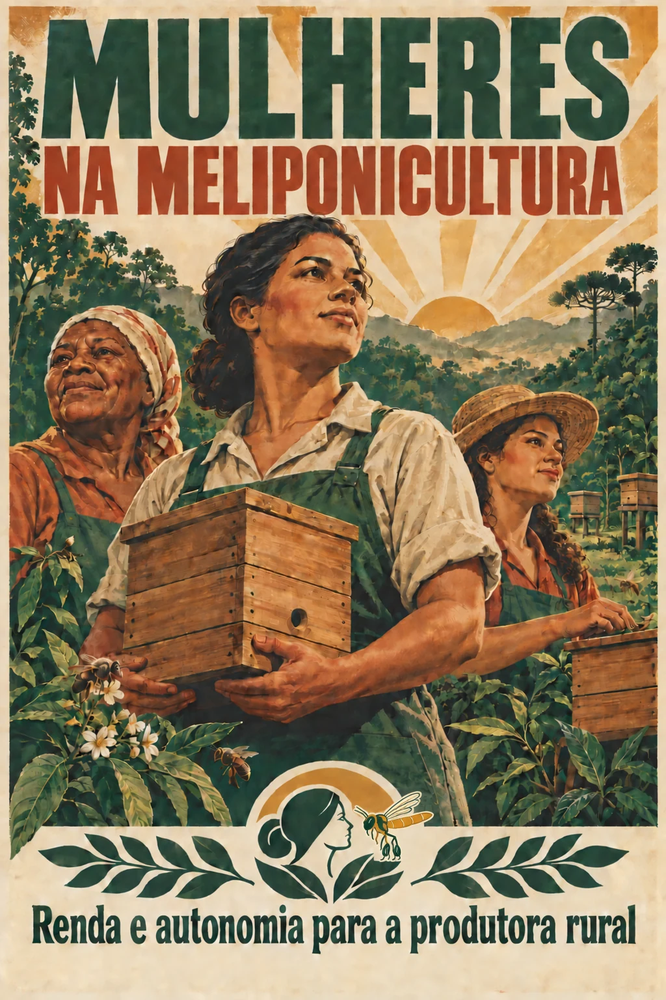
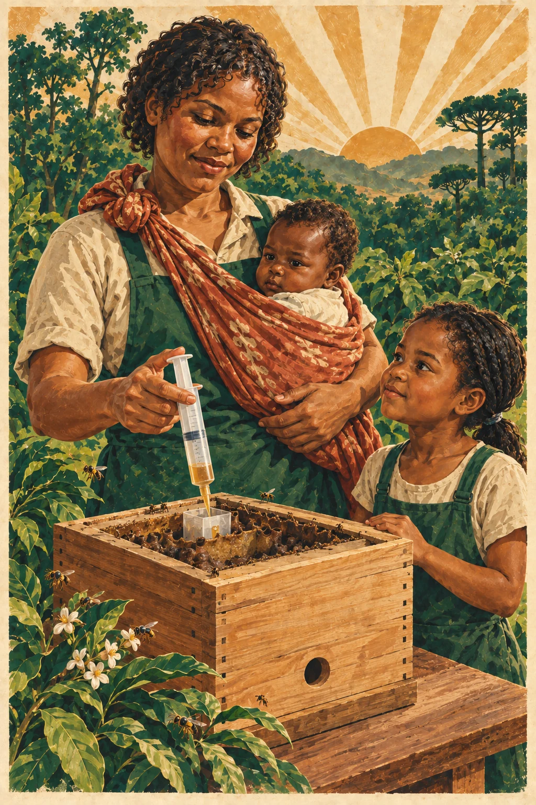
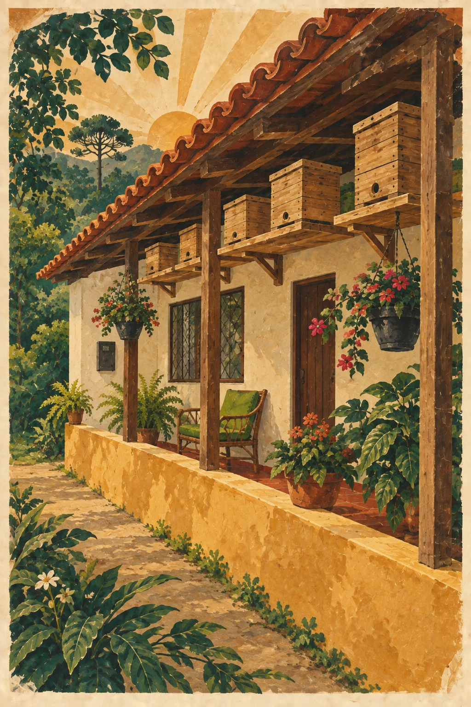

Enxames e produtos das abelhas
Multiplicação responsável e comercialização legal de enxames; colheita de mel, própolis e cerume.
PROJETO DE IMPACTO SOCIOAMBIENTAL
Renda e autonomia para a produtora rural.
Uma floresta de possibilidades perto de casa.
Formação técnica, valorização do trabalho feminino e conservação da Mata Atlântica, por meio da criação de abelhas nativas sem ferrão.

01 / O PROJETO
Uma atividade produtiva na própria propriedade pode abrir novos caminhos para as mulheres do campo.
O projeto Mulheres na Meliponicultura amplia as possibilidades de geração de renda e de autonomia para mulheres de comunidades rurais. Une qualificação técnica, implantação de atividades produtivas e conservação da Mata Atlântica.
Aliamos a formação a conhecimentos sobre empreendedorismo, marketing e vendas, apoio à produção, acompanhamento continuado e conexão com o mercado.
“Nosso trabalho não termina no curso. Queremos que cada mulher reconheça o valor de seus conhecimentos, desenvolva uma atividade produtiva e encontre oportunidades reais de comercialização.”

POR QUE A MELIPONICULTURA?
A criação de abelhas nativas sem ferrão pode começar em quintais, jardins e varandas, com poucas colônias e uma estrutura simples. O investimento e a produção podem crescer de forma gradual.
O manejo dispensa o esforço físico intenso comum a muitas atividades agropecuárias. Exige conhecimento, atenção, observação e delicadeza: cada colônia tem necessidades próprias.
Ao levar a atividade para perto de casa, o projeto responde a dificuldades reais das mulheres rurais: grandes deslocamentos, custos para empreender e a conciliação entre trabalho e cuidado dos filhos.
DA COLÔNIA AO TERRITÓRIO
Conhecimento técnico, manejo responsável e caminhos de comercialização adequados a cada território.
Multiplicação responsável e comercialização legal de enxames; colheita de mel, própolis e cerume.
Uso das matérias-primas em alimentos, cosméticos artesanais, atrativos para iscas e outros produtos.
Educação ambiental e turismo de experiência, conectando a economia local à conservação da floresta.
02 / DA FORMAÇÃO À AUTONOMIA
Apenas a formação não garante renda. Por isso, o projeto avança da qualificação até a implantação da atividade produtiva.
Definição do território, escuta das lideranças e compreensão das necessidades das participantes.
Biologia das abelhas, instalação, iscas, captura responsável, manejo, multiplicação, colheita e conservação, com fundamentos e prática.
Custos, preços, organização financeira, planejamento, identidade, divulgação, atendimento e canais de comercialização.
Apoio para iniciar ou ampliar a atividade, com estrutura, assistência técnica e agregação de valor aos produtos.
Aproximação com feiras, parceiros, compras coletivas e redes de colaboração.
Suporte técnico para identificar avanços, dificuldades e oportunidades de continuidade.
APOIO PARA COMEÇAR
Cada edição pode incluir apoio inicial, conforme os recursos disponíveis e as necessidades do grupo.
ACESSO E PERMANÊNCIA
Planejamos cada edição a partir da realidade concreta das participantes. A estrutura e a duração das aulas são pensadas para favorecer a adesão e a permanência na formação.
Levamos os cursos às comunidades, com alimentação, materiais e transporte gratuitos, além de espaço adequado para o acolhimento dos filhos das participantes.
03 / IMPACTO E TRANSPARÊNCIA
Quatro dimensões orientam o projeto: conservação, renda, autonomia e território. Os resultados de cada edição podem ser acompanhados em três frentes.
Mulheres capacitadas, acesso à formação, frequência, conclusão e conhecimentos adquiridos. Confiança, autonomia, valorização do trabalho feminino e redes de colaboração.
Atividades iniciadas, meliponários implantados e produtos desenvolvidos. Experiências de venda, novos canais, parcerias e oportunidades de renda.
Conhecimento sobre polinização, manejo responsável e colônias mantidas. Educação ambiental, valorização da biodiversidade e participação comunitária.
A empresa parceira acompanha a execução e recebe informações claras sobre a aplicação dos recursos e os resultados alcançados.
NOSSO TERRITÓRIO
Nossa atuação começa nas comunidades rurais de Morretes e Antonina, no litoral do Paraná. Uma região de Mata Atlântica, agricultura familiar, turismo e grande diversidade de abelhas nativas.
Com conhecimento, apoio e acesso ao mercado, uma mulher pode começar com poucas caixas em seu quintal, produzir, vender e ampliar sua atividade. Cada meliponário também aproxima a comunidade das abelhas e da importância da floresta.
O modelo pode chegar a outros municípios e regiões, após a avaliação das características ambientais, sociais e econômicas de cada território.

04 / CONSTRUA ESSA TRANSFORMAÇÃO
Empresas, instituições locais e parceiros técnicos podem apoiar a jornada completa ou módulos específicos. As entregas são definidas de acordo com o território, o público, os objetivos e os recursos disponíveis.
Planejamento, coordenação, profissionais e prestação de contas.
Transporte, alimentação, acolhimento infantil e materiais.
Caixas, ferramentas, colônias, insumos e assistência técnica.
Produtos, embalagens, feiras, visitas e canais de venda.
Novas turmas, comunidades e replicação em outros territórios.
Adaptamos a edição ao perfil das participantes, às espécies de abelhas da região, às oportunidades de mercado e aos objetivos da empresa apoiadora. A proposta pode começar com uma formação introdutória ou incluir implantação de meliponários, desenvolvimento de produtos, assistência técnica e acesso ao mercado.
Além da formação, as entregas podem incluir mobilização e diagnóstico; kits, caixas, colônias e insumos; transporte, alimentação e acolhimento infantil; visitas e intercâmbios; feiras; grupos produtivos; registros, histórias e relatórios de impacto.
VAMOS CONVERSAR?
Para empresas e instituições que acreditam no desenvolvimento das pessoas, na valorização das mulheres no campo e na conservação da Mata Atlântica.
PARA LER E COMPARTILHAR